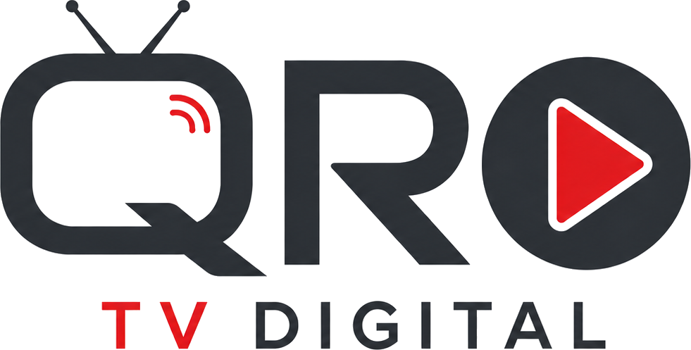

ESTRENO
ACTUALIDAD

TRANSMISIÓN CONTINUA
Programas, conversaciones y acontecimientos de nuestra ciudad en una señal digital permanente.
CATÁLOGO
ACTUALIDAD
ENTREVISTAS
CULTURA
FORMATO BREVE
Lo esencial, sin rodeos.
Una voz que vale la pena escuchar.
Momentos de nuestra ciudad.
El otro lado de la producción.
LECTURA + IMAGEN
CIUDAD · 8 MIN DE LECTURA
Una mirada visual a los espacios, las personas y las ideas que transforman la vida cotidiana.
Leer artículo →